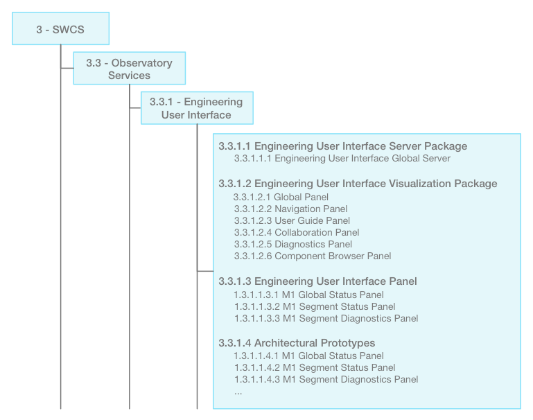
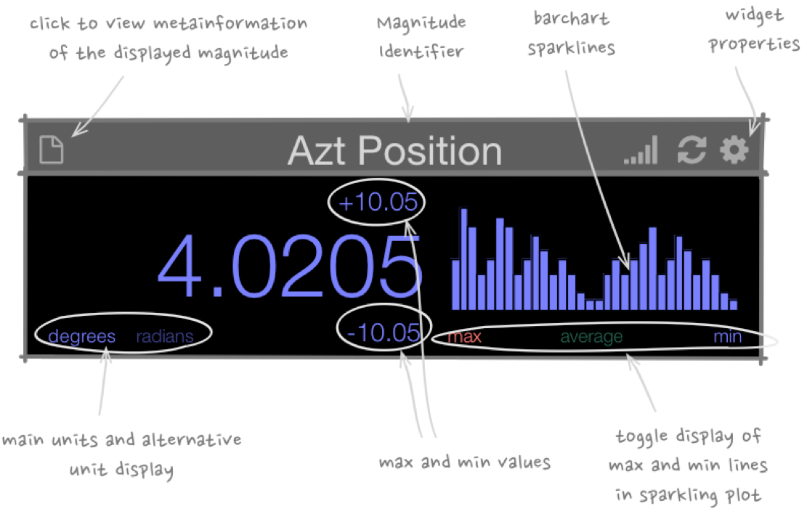
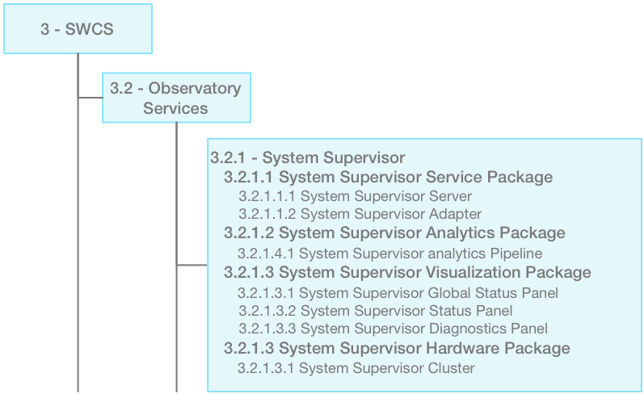
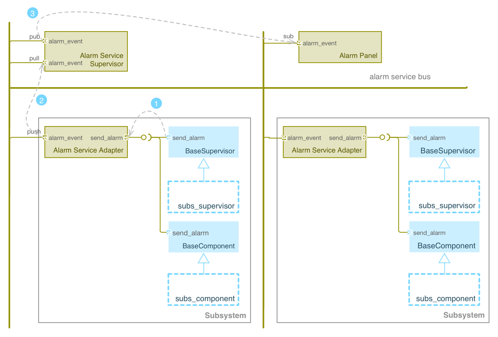

4. Observatory Services¶
The GMT software and controls system is highly distributed: the control components are deployed in computers distributed across different locations of the observatory and connected by networking infrastructure. This scheme makes it possible to optimize digital and analog signal paths, thermal conditioning, and maintenance accessibility.
A set of common services provides the basic infrastructure that enables the telescope control system (TCS) and observatory operations (OOP) components to communicate and collaborate in order to perform high-level control and monitoring. Additionally, some of these services have components that allow self-monitoring of their own operation. The Figure below shows the Observatory Services Product Tree:

Fig. 19 Observatory Services Product Tree
The set of common services available to subsystems and components being controlled include:
- Command Execution
- Alarm events transport and management
- Logging events transport
- Telemetry sampling, transport and filtering
- Component configuration
- System health supervision
- Engineering user interface
- Command line access to all the registered components
- Component and subsystem on line documentation (metadata)
- Network infrastructure management
- Data flow service (Low latency/ high bandwidth / synchronous)
4.1. Service Architecture¶
The implementation of the common services follows a distributed architecture (see following figure) in which service adapters allow distributed components to access the service bus, while service supervisors coordinate services. Service adapters define the low-level interface between components and observatory services. Communication between adapters and supervisors may follow different communication patterns (e.g., publish/subscribe, push/pull, request/reply). The Section on Core Framework describes the different communication patterns that are available.
Fig. 20 Common Services Architecture. (1) Components access the service through the adapter API when an event is generated (e.g., alarm detected). (2) The “payload” (e.g. alarm event, telemetry sample) is transported from adapter to supervisor through the Service Bus. (3) Service Supervisors coordinate services, and process the service payload when received. (4) The service payload is stored and/or forwarded to components that subscribe to the service. (5) Operators can filter or cross-correlate any persistent data stream for further analysis. .. _service_adapters:
4.1.1. Service Adapters¶
Service adapters enable every distributed component in the system to access infrastructure common services. They serve as the low level interface between hardware and software components and observatory services. Service adapters help to:
- Isolate distributed components from service implementation. This helps to manage obsolescence in hardware and software.
- Focus application developers on developing applications (e.g. control, data processing). Application developers should not need to solve infrastructure problems that are common to all subsystems.
- Standardize base implmentation. A base component (in an object oriented sense) implementation provides a template for all service adapters to bootstrap from.
- Simplify interaction and deployment. Software components need to only know about the service native API, and not how the service or distributed communication are implemented. They hide details like how to manage connection, service threads, marshaling and de-marshaling of events and data streams, time stamps, middleware configuration, optimal communication pattern, how to register component services in runtime database.
Base classes in the Core Component Framework wrap these low-level interfaces in a simplified high-level application-programming interface (API), reducing the overhead necessary to integrate a software component into the GMT system. When a component is deployed and its service adapters setup and bootstrapped, all the component service features become available system-wide. Service adapters can be shared between components depending on the performance requirements.
The adapter hides from the component service implementation details like:
- Connection management
- Service Thread management
- Marshaling and de-marshaling of event and data streams
- Time stamping of events
- Specific middleware setup
- Implementation of optimal communication patterns
- Registering of component service functions in the runtime database
Communication between adapters and supervisors may follow different communication patterns (e.g., publish/subscribe, push/pull, request/reply). The Section on Core Framework describes the different communication patterns that are available.
4.1.2. Service Supervisors¶
Service supervisors coordinate and maintain the health status of the services. Some services may require several servers running in a cluster, or may connect to a high performance file system for persistent high throughput events or data streams. The service supervisor provides the following capabilities:
- Archiving of the data and event streams coming from service adapters
- Implementation of optimal communication pattern
- Archiving of the service configuration data
- Service analytics and reporting
- Monitoring the health of the service adapters (the System Supervisor is responsible for monitoring the health of the different Service Supervisors)
- Publish/subscribe access to the data and event streams
- Load balancing
- Fault tolerance
- Scaling due to bandwidth or growing storage demands (e.g., new systems added to the observatory)
- Visualization of service data
- Cross filtering of multidimensional datasets.
The implementation of the service supervisors is not monolithic. Depending on the prevailing communication patterns, it is possible to implement different ways to distribute the process workload (e.g., broker, fan-out). This allows the efficient use of computing resources and elastic adaptation to the load.
4.1.3. Service Bus¶
A dedicated service bus connects Service Adapters and Service Supervisors. Each service bus provides a logical network connection that addresses the specific throughput, bandwidth and latency requirements of the service. The Section on the networking platform provides a description of the GMT networking infrastructure.
4.2. Common Services¶
This section goes elaborates on the architecture, design, and specifications of the observatory common services.
4.2.1. Engineering User Interface Service¶
Engineering user interfaces provide a low level detailed graphical interface to the GMT system. This interface is not optimized for scientific operations, and is used in collaboration with the Command Line Interface (CLI) service during the development, testing, integration, and commissioning phases of the GMT subsystems.
Engineering User Interface Product Tree overview
Like all of the GMT user interfaces, the main components are Panels and Widgets. Widgets are grouped into Panels that are assigned to the GMT operation display units. Engineering user interfaces are in most cases generated according to UI specification files. The engineering Panels are built using the standard Widgets provided by the UI framework (e.g., 2D plot, scalar). In contrast, the Operation User Interface System includes additional ad-hoc widgets designed to optimize the main high-level operator workflows. The figure below shows and example of a scalar view widget.
Fig. 21 Engineering Scalar Widget Example
Service Capabilities
The engineering user interface components provide the following capabilities:
- Display of all the information relevant to a Subsystem or Component
- Default Panel generation using engineering layouts
- Subsystem view (e.g., alarms, logs, monitors, commands, properties)
- Component view
- System navigation (e.g., system tree widget)
- Profile management
- Integration with the Operations User Interface
4.2.2. Command Execution Service¶
The Command Line Interface (CLI) complements the graphic user interfaces used for both engineering and operations. It provides low-level access to all the system functionality, and the flexibility often required during testing and commissioning phases. CLI also provides a way to operate subsystems in early stages of development, when the UI is still being developed and does not provide all the functionality.
The figure below shows a screenshot of the CLI interface used to navigate the GMT semantic model. More specifically, it shows command-line completion (first line) and component introspection (fourth line). The CLI allows scoped name completion and component introspection. Alias and shortcuts can be defined to facilitate user interaction.

Fig. 22 Command-line Service. Example of command line completion (first line) and component introspection (fourth line)
Service Capabilities
The Command Line Interface components provide the following capabilities:
- Access to the public interface of any distributed component
- Advanced debugging and troubleshooting
- Command completion and introspection enables interactive discovery of the system functionality at runtime
- Support for development and test automation
- Interactive shell command (gmt command)
- Access to on-line documentation, introspection and model and metamodel semantics.
- Scripting
- Batch processing (gds “gmt development system” command)
- Alias definition to minimize typing long command names and reducing typing errors.
Service Deployment
The Command Line Interface can be executed in any of the operation consoles on the observatory control network. Given the distributed nature of the project it may often be useful to grant access to the CLI tool from the operation network so subsystems experts can diagnose a fault condition. For safety reasons, CLI sessions in the operation network should only be granted specific authorization levels.
4.2.3. System Supervisor Service¶
Health and quality monitoring is central to ensuring that all the hardware, devices, components, and so on down the line are working properly and safely. As such, means of monitoring are provided inside many hardware and their devices at all levels via controller supervisors (which are defined as part of the SWCS architecture).
The GMT has a large number of distributed Subsystems and Components that are deployed in different computers or embedded units to implement telescope control functions. Each Subsystem is required to deploy a Supervisor to coordinate, monitor, and manage, the health status of its respective software and hardware Components. In order to guarantee reliability it is important to monitor and manage the overall health of these Subsystems and Components. The System Supervisor is thus in charge of the overall health of the system by watching over the hierarchy. It ensures that the system as a whole can handle fault tolerance, service availability, and failure detection, thus ensuring the overall robustness.
The implementation of supervisory functions in a dedicated subsystem allows the rest of the components to focus on their primary operational functions. It allows the separation of responsibilities, thus enabling the supervisory strategies to evolve independently from their subsystems. For example, it is possible to implement a new supervisory strategy without the need to modify the application subsystems. This strategy also simplifies the implementation of the Supervisory Service, as it only has to focus on monitoring and managing the health of the system. A mix of watchdog, heartbeat, and ping, mechanisms usually accomplishes this.
The System Supervisor accesses the database to load runtime system configurations appropriate to a given operation mode (e.g., only the health of focal stations that are considered active or standby or the hardware installed on the telescope, FSM vs. ASM, are being monitored).

Fig. 23 System Supervisor Service Block Diagram. (1) A component creates a health event and invokes the health_check method inherited from the BaseComponent or BaseSupervisor classes. (2) A service adapter sends the health event to the supervisor using a push socket. (3) The service supervisor forwards the event to the subscribed components using a pub socket.
The above System Supervisor design is inspired by Erlang/OTP which is one of the most reliable systems. It is designed to recover easily from fault conditions. The emphasis in Erlang is not so much to reduce the risk of failure, but to consider fault conditions as part of the nominal scenario so as to be able to recover from faults quickly and efficiently.
Service Capabilities
The System Supervisor provides the following capabilities:
- Coordinates the GMT automatic start-up and shutdown procedures
- Starts and shuts down the subsystem hardware
- Re-starts any SWC subsystem that crashes
- Re-starts any SWC subsystem when requested by a user
- Ensures that all the subsystems required by a given operation mode are in nominal operation state (e.g., ping/watchdog)
- Enables users to query the health of all subsystems at various granularities. Querying may be performed via user interfaces at high levels, and direct command line interfaces at low levels. The query system will allow users to learn about devices, commands, and meaning of the parameters and outputs, on-line and interactively.
- Manages optimal information flow to inform human supervisors. This involves processing and filtering of information.
- Provides effective and efficient visualization displays that adequately capture the overall health of the observatory, telescope, instruments, and weather environment.
- Reports host information: Operating system resources usage, version of operating system and installed software, version of every software module, validation vs. specified configuration.
- Enables automated localization and alert of problems and devices that do not operate within nominal ranges, or environmental conditions that endanger the safety of the telescope or observatory.
- Reports information about the processes running in the system: start time, status, etc.
- Administers the system deployment model
- Redeploys a service or process in an alternative computer if the one assigned becomes unresponsive.
- Implements secondary fault tolerance and load balancing. (The system supervisor, analyses the load of the different services and may deploy additional resources to address additional demands)
- Detects health of the underlying communication infrastructure
- Implements an Observatory Wide rule system to match global rule conditions and trigger associated actions.
- Acts as a Supervisor of supervisors. Each subsystem is required to deploy a Subsystem supervisor.
Service Packages
The System Supervisor Subsystem is organized in the following configuration:
Fig. 24 System Supervisor Product Tree
Service Package (server & adapter) -
A supervisory server system, deployed in several machines, takes care of implementing the System Supervisory functions. Additionally the system supervisor server provides features that allow managing of load balancing and fault tolerance. The system supervisor operation, as with any other component, can be monitored by the telemetry system defining monitoring features in its interface (e.g., the number of components connected, number of active alarms, state of the server, instant alarm throughput).Analytics Package -
The analytics package provides the following capabilities:
- Allows reconstructing the history of the health of the system.
- Allows the analysis package components to run in real time streaming mode.
- Triggers any action associated with the system supervisor rules.
Visualization Package -
The visualization package provides custom panels that allow observatory operators to monitor and manage the System Supervision System, summarized in the following table:
Table 5 Alarm Service Visualization Panels¶ Service Deployment
The System Supervisor service is a distributed system; it consists of several components running on different computers in the GMT control network. A System Supervisor server is deployed in one of the Sever Class Computers in the electronics room. Each SWCS subsystem is required to deploy a Subsystem Supervisor Component in the corresponding computer. It is important to emphasize that all of the SWCS subsystems are required to deploy a supervisor, this includes not only Device control Subsystems but also user interface applications.
The visualization package components are deployed in the control room Operation Support Computers.
4.2.4. Telemetry Service¶
The telemetry service provides the ability to observe any data transmitted by hardware or software subsystem available for monitoring. Telemetry data usually consist of a continuous flow of scalar values at a certain rate. The Telemetry Service allows one to select the quantities to monitor, and to start or to stop collecting data.
The telemetry adapter provides an interface that allows:
- Retrieval of quantities to be monitored in a given Subsystem or Component
- Start/stop sampling and collecting of monitoring data
- Specifying the rate at which the data are sampled.
Two categories of measurement data can be sampled:
- Continuous: quantities that are continuous in values. For instance, a temperature sensor.
- Discrete: quantities that are discrete in values. For instance, the state of a switch (ON, OFF), the position of a window within a range of three possible positions (CLOSED, HALF-OPEN, OPEN), etc. When monitoring discrete quantities, only the changes of value are sampled.
The Table below shows the GMT estimated bandwidth including all subsystems described in Table 10-5 plus AO. The total average bandwidth is 76.35 MBps, or 2.62 TB per night (considering a 10hr night), which defines the GMT storage requirements.
Table 6 Estimated Telemetry Bandwidth¶ The telemetry service is implemented, like other infrastructure services, as a distributed system. The telemetry adapters allow any component of the system, usually running in Device Control Computers, to send any telemetry data to the telemetry supervisor through a common API. Depending on the required bandwidth the adapter may provide different transport strategies (e.g., a circular buffer held in memory or Solid State Disk that is flushed periodically) and fault tolerance capabilities (e.g., routing the outgoing data to an alternative supervisor). The telemetry supervisor takes care of storing the data in the telemetry database for further analysis or to relay the streams of data for presentation in the user interface.
Service Packages
Service Package (server & adapter) -
A telemetry server system, deployed eventually in several machines takes care of receiving telemetry samples, storing them and forwarding them to the telemetry user interface panels or the telemetry analysis system.
In addition to the handling of telemetry monitors, the telemetry server provides features that allow load balancing and fault tolerance. The telemetry system operation, as with any other component, can be monitored by the telemetry system itself specifying monitor features in its interface (e.g., number of components connected, number of active alarms, state of the server, instant alarm throughput).
Analytics Package -
The analytics package provides the following capabilities:
- History reconstruction of any quantity monitored by the system
- Real-time monitoring and telemetry analysis in streaming mode.
- Export of time-stamped telemetry data samples to ASCII format (e.g., CSV files).
Visualization Package -
The visualization package provides custom panels that allow observatory operators to monitor and manage the telemetry of the system. This is done by implementing several optimized visualizations.
Table 7 Telemetry Service Visualization Panels¶ Service Deployment
The most demanding use of the telemetry system will be for AO operations; a potential implementation is shown in the Figure below. Sampling the dense actuator subsystems at full rates and storing the data for follow-up analysis and diagnosis require large storage capacity, large bandwidth, and the ability to access the data efficiently.
The telemetry bandwidth estimate table above presents the bandwidth requirements for telemetry service in the AO observing modes. The aggregated bandwidth required is just 260 MB/s due to the fact that it is not necessary to store the WFS pixel values. For follow-up diagnostic purposes, the AO System requirements document stipulates that the full rate telemetry should be stored for a minimum period of 10 min, with the goal of storing a full night of telemetry data.
With the current generation, low cost, Infiniband network adapters and switches, bandwidth tests (see Networking Section) show that it is already possible to achieve an average of 3 GB/s. Readily available Solid State Drives (SSD) provide a data writing bandwidth in excess of 1 GB/s using a PCIExpress 3.0 interface, and more if they are combined in a RAID arrangement. Only 16 GB are necessary to hold 10 minutes of telemetry at full rate, a trivial amount now for current high-end solid state drives. As performance inevitably improves and the storage cost continues to decrease with time, storing a full night of telemetry data in a cost-effective way will be achievable.

Fig. 25 A Possible Telemetry Service Implementation
4.2.5. Alarm Service¶
The alarm system, along with the system supervisor and the Interlock & Safety System (ISS), provide functions to assess and manage the overall health of the system. Alarm events are triggered when an alarm condition is detected by a Component (e.g., Controller or Supervisor). Alarm events are time-stamped and include information on the component that has triggered the alarm.
The alarm system associates (using metadata) a set of actions with every alarm event that has to be monitored manually or executed automatically. These actions can include a reference to a workflow or sequence if one has been defined.
Alarm conditions are part of the specification of a component, shown in the following code-block. When a fault condition occurs in a component, it is the responsibility of that component to either handle the fault or to transmit alarms up the supervisory chain until they reach a component that can address the problem, or else eventually up to the operations staff.
EnumType "AlarmSeverity", desc: "Defines the severity level of the AlarmEvent" literals: ALARM_A: "" StructType "AlarmEvent", extends: [] abstract: false desc: "Time stamped Alarm Event" elements: id: type: "string" desc: "Alarm ID. Allows associating the alarm with the Alarm description" value: type: "string" desc: "Text message with additional information related to the alarm event occurrence" timestamp: type: "TimeStamp" desc: "Trigger time of the alarm event" severity: type: "AlarmSeverity" desc: "Level of severity of the alarm event" source: type: "string" desc: "URI of the component that has detect the alarm condition"Service Capabilities
The Alarm System provides the following capabilities:
- Notification of alarm events from any component in the system
- Analysis of the stream of alarms to identify system health conditions
- Filtering of alarms
- Storage of alarm events
- Visualization of the status of all the alarms in the system
- Correlation via timestamp with any other event in the system
- Logging operator acknowledgment.
Service Packages
The implementation of the above capabilities is distributed to a set of packages:
Service Package (server & adapter) -
An alarm server system, deployed in several machines, takes care of receiving alarms, storing them and forwarding them to the alarm UI panels, or the alarm analysis system.
In addition to the handling of alarm events, the alarm server provides features that allow managing of load balancing and fault tolerance. The alarm system operation, as with any other component, can be monitored by the telemetry system by specifying monitoring features in its interface (e.g., the number of components connected, the number of active alarms, state of the server, instant alarm throughput).
The following alarm service block diagram shows how distributed components and supervisors access the Alarm Adapter interface to notify an alarm event. Adapters forward the alarm events to the alarm supervisor using push/pull sockets. Usually a single Alarm Adapter is deployed for all the components of a Subsystem that are collocated in the same computer.
Fig. 26 Alarm Service Block Diagram. (1) The component detects an alarm event and invokes the send_alarm method inherited from the BaseComponent or BaseSupervisor classes. (2) The service adapter sends the alarm event to the supervisor using a push socket. The Service supervisor applies the business process rules associated with the alarm event if they are defined. (3) The Service supervisor publishes the event to the subscribed components using a pub socket.
Analytics Package -
When an alarm is triggered, it may be useful to reconstruct the history and states of a subsystem surrounding that event. The analytics package allows for that possibility. The analysis package components run in real time streaming mode.Visualization Package -
The visualization package provides custom panels that allow observatory operators to monitor and manage the alarms of the system. This is done implementing several optimize visualizations.
Table 8 Alarm Service Visualization Panels¶ Service Deployment
During operation, the alarm system components are deployed in different computers. A simple library is added to every component that allows the sending of alarm events. This is done via a simple API that doesn’t expose any service details to the component.
4.2.6. Logging Service¶
Logging records the history of events, whether normal or abnormal, surrounding GMT operations, such as whether an user has logged on to the GMT, or an observation has just been completed. Logging events are intended for view and access on a console, and stored in a persistent database.
The analysis package provides the capability to visualize or display specific information in the log database, e.g., automatically generate periodic reports reflecting operator activity, command logs, instrument and equipment activity. Messages generated during an observation can be added to the observation data bundle to enable provenance and quality monitoring. Sometimes major errors can arise first from scattered and seemingly harmless errors that are correlated in time. The supervisor service can define rules to detect and decide whether such occurrences are symptomatic of something more severe.
The following illustrates a log event specification:
# Logging Event Specification EnumType "LogLevel", desc: "The log methods expect a log level, which can be used to filter log messages when they are retrieved. Levels follow OSGi Log Service Specification." literals: LOG_DEBUG: "Used for problem determination and may be irrelevant to anyone but the Component developer." LOG_ERROR: "Indicates the component may not be functional. Action should be taken to correct this situation." LOG_INFO: "May be the result of any change in the component and does not indicate problem." LOG_WARNING: "Indicates a component is still functioning but may experience problems in the future because a warning condition" StructType "LogEvent", extends: [] abstract: false desc: "Time stamped Log event" elements: value: type: "string" desc: "Text message with additional information related to the alarm event occurrence" timestamp: type: "TimeStamp" desc: "Time of the creation of the log message" level: type: "LogLevel" desc: "Level of the log event" source: type: "string" desc: "URI of the component that has issue the log message"The figure below illustrates the Logging Service and the interactions between the components involved in the creation and propagation of log events. Adapters forward the log events to the log supervisor using push/pull sockets. Usually a single Log Adapter is deployed for all the components of a Subsystem that are collocated in the same computer. Although the interfaces are different this arrangement is similar to the design other services.

Fig. 27 Logging Service Block Diagram. (1) A Component creates a log message and invokes the log method inherited from the BaseComponent or BaseSupervisor classes. (2) The Service Adapters forward the log events to the log supervisor using push/pull sockets. Usually a single Log Adapter is deployed for all the components of a Subsystem that are collocated in the same computer. Although the interfaces are different this arrangement is similar to the design other services. (3) The Service Supervisor forwards the event to the subscribed components using a pub socket.
4.2.7. Networking Infrastructure Service¶
A combination of multi-fiber trunks and breakout cables provides galvanic isolation between the different equipment installed in the electronics room and the telescope enclosure. The network layout is based on a switching fabric layout common in High Performance Computing applications.
Logical networks (e.g., in the current baseline design, Infiniband) are used to implement the low latency communication between components involved in the “Fast-Control” AO loops, while 10/40 GbE is used to transport and store AO telemetry data streams independently of control data.
4.2.8. Configuration Service¶
The properties/behaviors of all controlled Subsystems and Components are stored as sets of static properties or metadata in a Configuration Database. Operators or subsystem specialists need to change these properties, so it is not convenient to have them hardcoded. Instead, configuration service manages and modifies the behavior of the subsystems and components. Configurations can be changed as a whole, depending on the operation mode (e.g., different values on limits may be used for testing and calibration than during nominal operation). These properties are loaded during startup, but may be changed individually during the execution of the system (e.g., using a new look-up table to apply error mapping correction in a motion control system).
The GMT SWC is composed of a large number of Subsystems and several thousand Component instances. Some Components are identical, such as the 6 positioners of the seven M2 segments. The behavior of the Controller of each positioner is the same and is implemented as a class, which is a specialization of BaseController. However, the configuration properties of each segment position Controller are different for each instance. As a result, the configuration service has to be able to manage efficiently a large number of configuration properties. As a general rule, there will be at least a default configuration for each component instance. It would be possible to create new configuration snapshots on-the-fly once a property is changed interactively.
Each Subsystem is required to implement a Configuration Adapter, which is a specialization of the BaseConfigurationAdapter. The Configuration Adapter interfaces with the Configuration Service to receive new configuration requests and implements the configuration strategy sequence. The change in configuration Properties of a Component depends on the state of the component, and not all the Properties can be changed in any state. For example, servo gain cannot be changed when a Controller is performing a motion in normal operation mode or the readout gain of a detector cannot be changed in the middle of a readout operation.
Service Features and Properties
The Configuration Service provides the ability to store properties, to group them into sets called configurations, to view the current properties used by a Subsystem, and to consult the available configuration for a Subsystem (e.g., default configuration, calibration configuration).
At least one predefined configuration for each GMT subsystem must exist, named the default. This configuration is loaded when a subsystem starts and enters the state setup (The Section on Controller State Machine explains the different states of a component). Although the Configuration Service checks to see if the value of a property is the correct range, it is the responsibility of the Subsystem or Component to check the correctness and consistency with predefined configurations before is applied. Individual property changes are allowed, but can only be saved as part of an existing or new configuration if the user has the appropriate permission. Configuration and Property changes are always logged to facilitate debugging in case of a malfunction.
Properties that represent physical magnitudes must specify their units and the data type. Only units defined as UnitType, and data types defined as DataTypes in the metamodel can be used in the definition of a property metadata.
Service Packages
Service Package -
A configuration server system, deployed in several machines, takes care of receiving configuration request and updates, storing or sending them to components that made the requests.
In addition to handling configuration properties, the configuration server provides features that allow the management of load balancing and fault tolerance. The configuration service operation, as any other component can be monitored by the telemetry system by specifying monitoring
Visualization Package -
The visualization package provides custom panels that allow observatory operators to monitor and manage the configuration service, shown in the following table:
Table 9 Configuration Service Visualization Panels¶ Service Deployment
The Configuration Supervisor is deployed in one of the SCC in the electronic room. The Supervisor has access to a permanent store and is available to all runtime components through the service bus.
4.2.9. On-Line Documentation Service¶
To Be Added